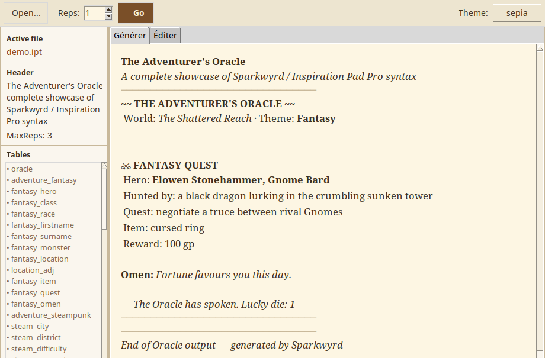
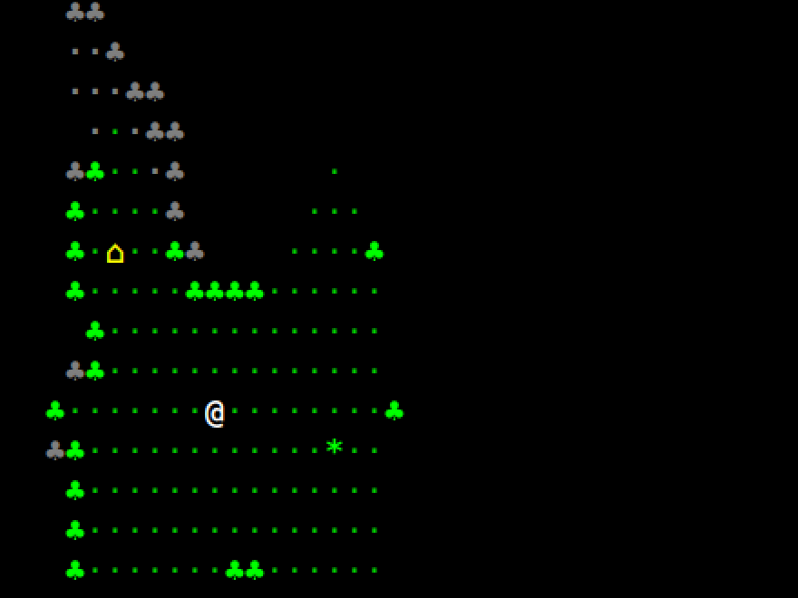

Sparkwyrd
Réimplémentation en Tcl/Tk du générateur de texte aléatoire Inspiration Pad
Pro, compatible avec les fichiers .ipt (tables pondérées, expressions de
dés, variables, filtres). Utile pour des générateurs de rencontres, de PNJ,
de trésors ou d'amorces d'histoires pour le jeu de rôle.

Escapades
Petit roguelike en mode texte, en Lua, pensé pour les pauses café et rejouable à l'infini : monde de surface généré (plaines, forêts, village), cavernes, tour à plusieurs niveaux, le tout procédural. Champ de vision, combat au système de jeu de rôle ESCAPADES, quêtes scénarisables, bilingue français et anglais. Rendu CP437, jouable dans un terminal comme sur la console Linux. Aventure d'introduction : La Tour Murmurante.

Yi Jing
Petite application graphique Tcl/Tk pour identifier un hexagramme du Yi Jing en basculant les six traits yin/yang d'un simple clic.